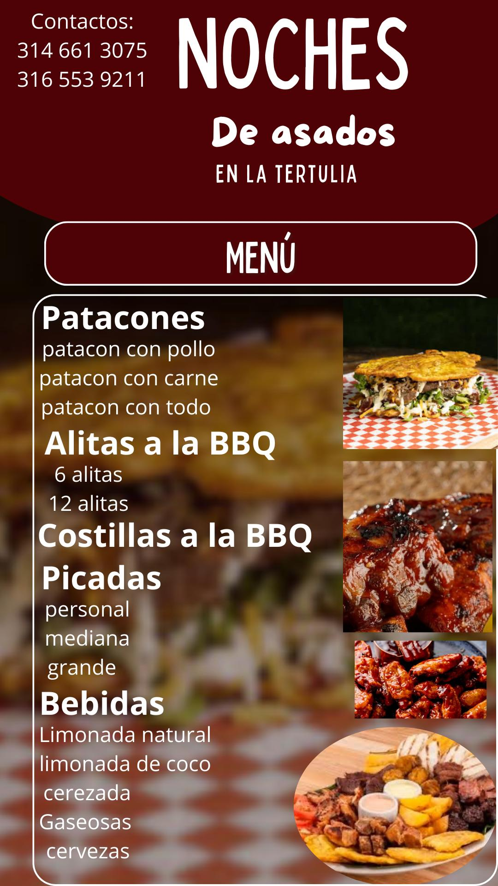
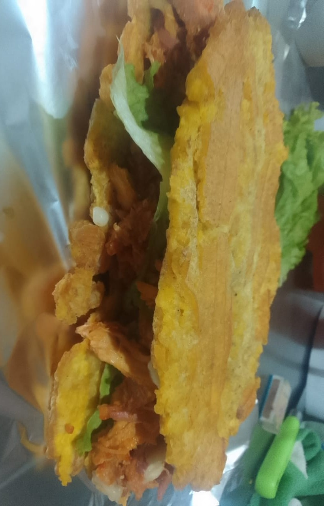
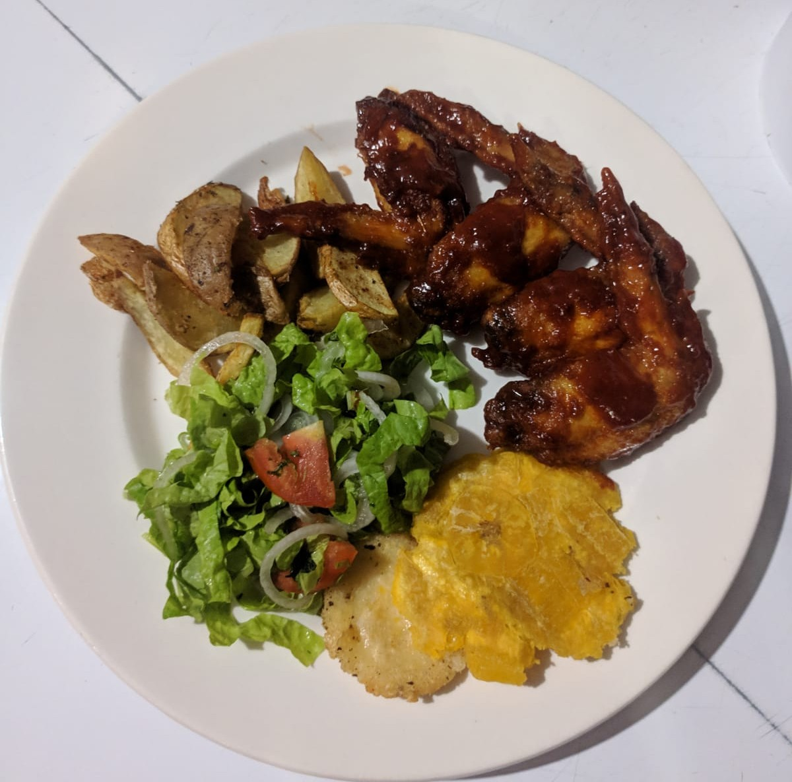
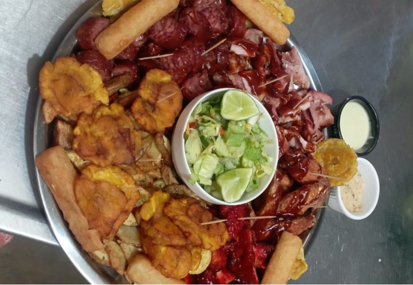
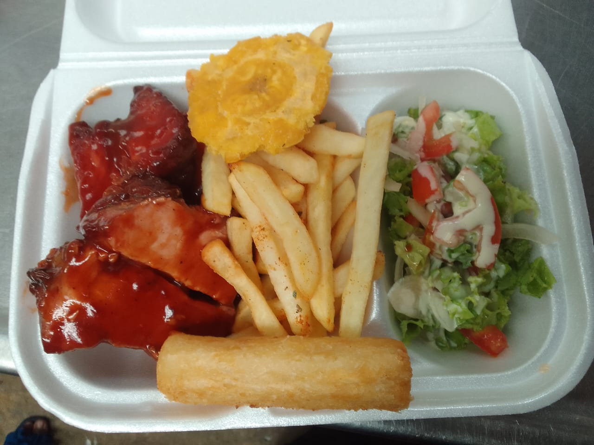
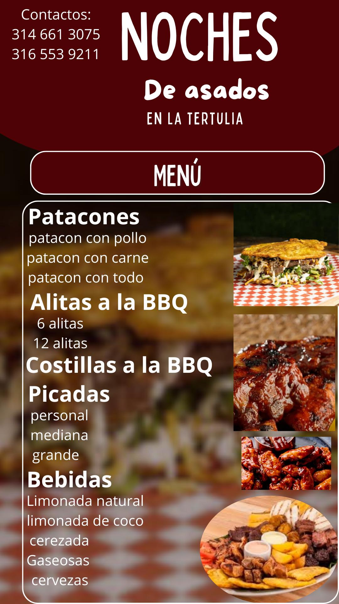
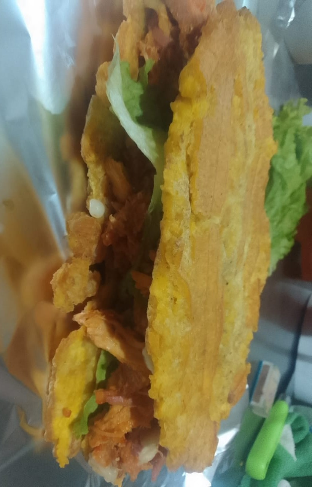
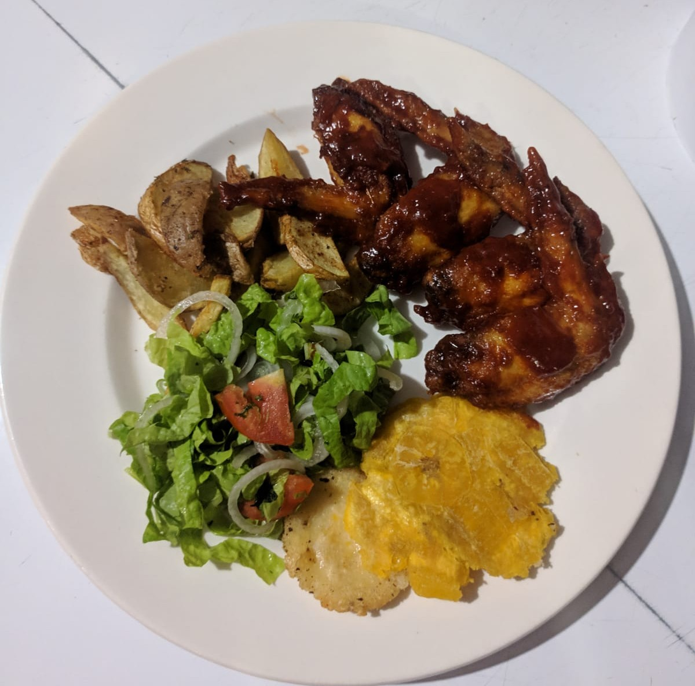
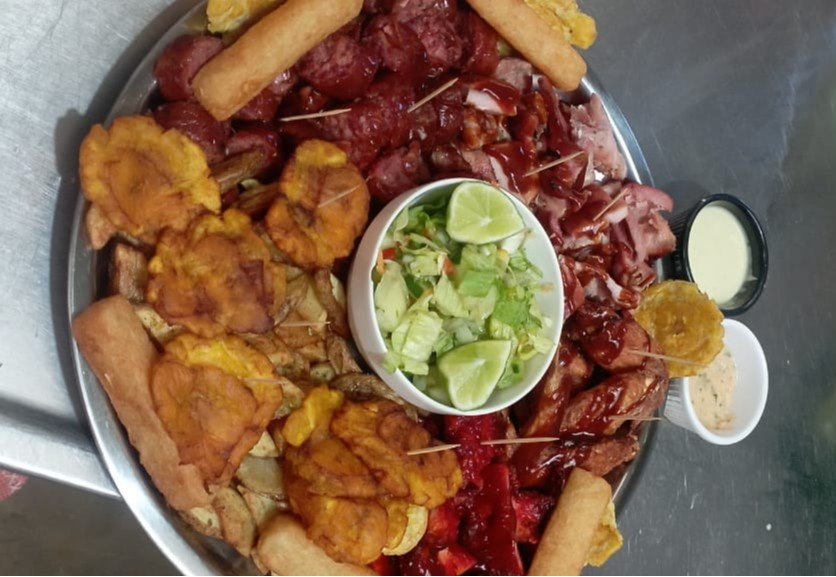
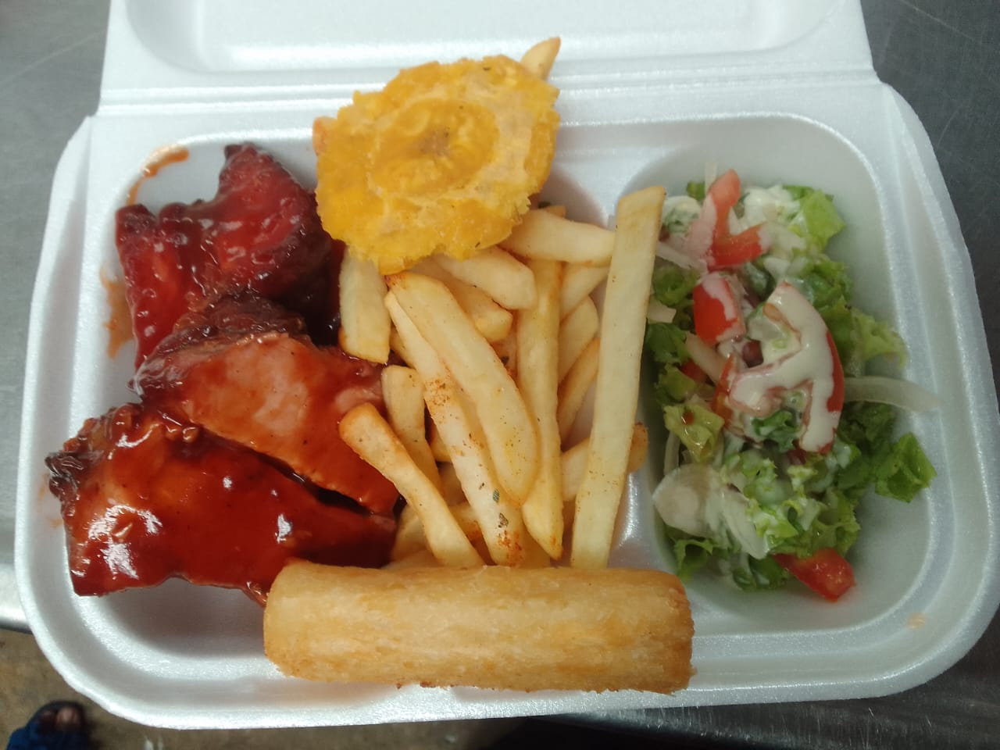

Este restaurante está ubicado en Guachené-Cauca, uno de los 42 municipios del departamento de Cauca, Colombia. Está localizado en la Provincia Norte. Se encuentra a 89 km de la capital departamental, Popayán. Es el último municipio creado en este departamento, en diciembre de 2006.
Este es un restaurante familiar, fue fundado en el año 2021, desde entoces ha sido reconocido por su increíble sazón y porque se puede disfrutar de alimentos de la mejor calidad a un bajo costo. El restaurante tiene abiertas sus intalaciones al público en general todos los dias, a excepción de los dias festivos.
Platillos
Tenemos una gran variedad de platillos, a continuación te mostraremos algunos de ellos:
Noches De Asados
Tenemos un espacio de venta de asados los sabados y domingos, a partir de las 4:00 PM, este también es un espacio muy agradable en el cual te ofrecemos asados con una sazón que ni te imaginas y unos precios de locura, ofrecemos Patacones, Alitas a la BBQ, Costillas a la BBQ, Picadas, etc,. A continuacón te mostraré un poco de lo que ofrecemos en nustras imperdibles noches de asados.
 









Ubicación
Este restaurante está ubicado en el casco urbano, en la carrera 5, #6-15, en el barrio Jorge Eliecer Gaitán, frente al centro de convivencia.
Puedes acceder a la ubicación de Guachené en el siguiente enlace:
Redes Sociales
A continuación encontraras el enlace que te llevará a nuestra pagina de instagram.
Tarjeta de presentación
LA TERTULIA
RESTAURANTE-BAR
El Restaurante-Bar La Tertulia, es un sitio agradable donde podrás disfrutar alimentos de la mejor calidad a un bajo costo.
Además ofrecemos servicio de bar y salón de eventos, para realizar fiestas, matrimonios, primeras comuniones, fiestas de 15 años, entre otros.
Estamos ubicados en Guachené-Cauca, en la carrera 5, #6-15, en el barrio Jorge Eliecer Gaitán, frente al centro de convivencia.
Contactos: 3146613075 - 3165539211.